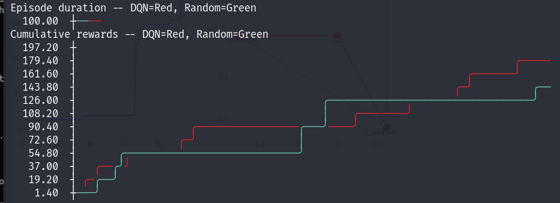
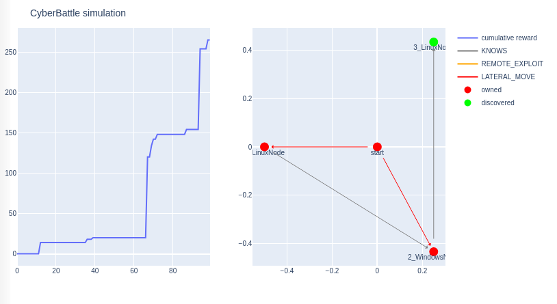
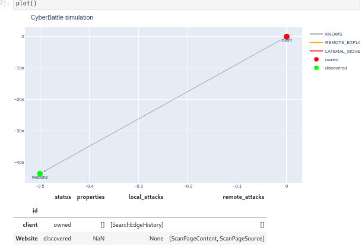
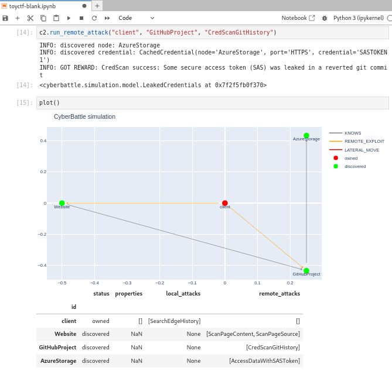
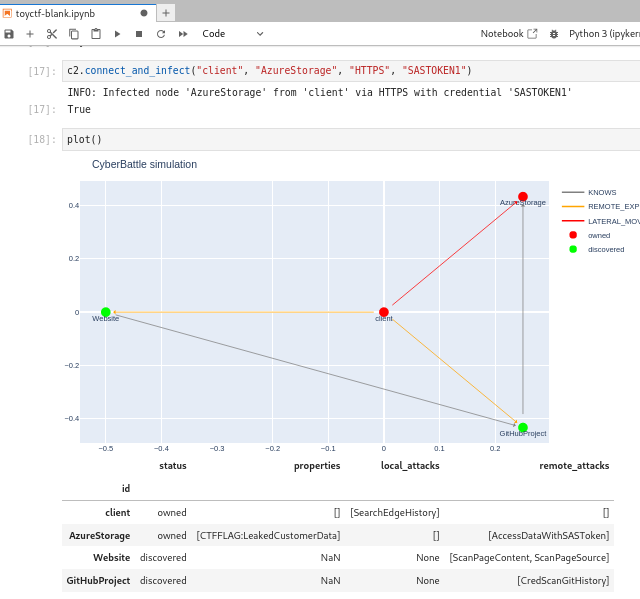

War Games
Captain's log, stardate 2026.287, supplemental.
Earlier tonight I read about attackers that learn. Tonight I watched one try.
CyberBattleSim, from Microsoft Research, is a war game. A model corporate network, no real machines. An attacker starts on one computer and must spread through the rest, earning points for every secret it uncovers and every machine it takes.
First, I let the machine play. A reinforcement learning agent, trained for five short games of a hundred moves each, against a rival that chooses its moves at random.

The trained agent won, but only just. Most of its moves found nothing. Some games it took two machines; others it stalled after one. Same network, different fate, every time.

Then I took the helm.

My first command failed. I tried to search a website from the inside before I had ever got in. That is exactly the distinction the agent has to learn through hundreds of failures.
After that, the trail was almost a story. The browser history named a website. The website linked to a code repository. The repository's history still held an access key someone had deleted, but not erased. That key opened a storage account full of customer data.


Seven moves. One mistake. First flag.
Lessons recorded
- Deleting a secret from code does not remove it. Version history keeps every old copy.
- A leaked key is a breach, no exploit required. Nothing was hacked. A door was simply left unlocked.
- The agent and I won differently. It had speed and patience. I had a story to follow. The real question is what happens when an attacker has both.
The deeper network is still unexplored. That mission resumes next time.
End log.